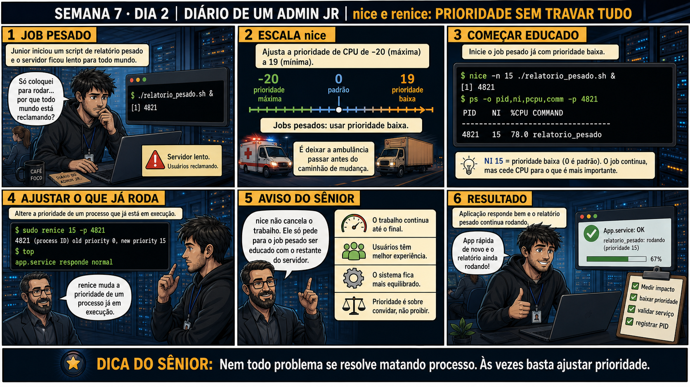

DIARIO DE UM ADMIN JR. | FASE 1 — LINUX, DO BÁSICO AO AVANÇADO
🔗 Conecta com ontem: kill encerra um processo. Mas nem todo processo pesado
precisa morrer — às vezes ele só precisa ceder espaço pros outros. Hoje você aprende a ajustar prioridade sem
matar nada.
🔓 Privilégio de hoje: ajustar prioridade de processos com nice e renice. Você
ganha o hábito de dar prioridade baixa a jobs pesados, deixando o resto do servidor responsivo sem cancelar
nenhum trabalho.
Semana 7 · Dia 2 | Nível Júnior
nice e renice: Prioridade Sem Travar Tudo
nem todo problema se resolve matando processo — às vezes basta ajustar prioridade
ANTES DE ALTERAR, OBSERVE. DEPOIS DE ALTERAR, VALIDE.

1. O chamado
Você iniciou relatorio_pesado.sh e o servidor inteiro ficou lento — colegas
reclamando. O job precisa terminar, mas não precisa competir de igual pra igual com o resto do sistema.
💡 Passa o mouse nas palavras destacadas pra ver uma dica rápida — clica se quiser a explicação completa com analogia.
2. O sênior te conta
Terça-feira, Semana 7
Ontem você aprendeu a escalada de sinais — pedir educadamente antes de forçar. Hoje o chamado é
parecido, mas com uma virada: às vezes o processo não precisa morrer, só precisa ceder espaço.
Lembro de um colega júnior que, no lugar de kill, matava tudo — literalmente. Um job de
geração de relatório (relatorio_pesado.sh) estava deixando o servidor inteiro lento,
colegas reclamando no chat. A reação dele foi matar o processo e reiniciar mais tarde, fora do horário
comercial. Só que aquele job já estava rodando havia 40 minutos, processando uma quantidade enorme de
dados — e todo esse progresso foi pro lixo com um único kill -9.
Um sênior mais experiente parou ele antes da próxima tentativa e perguntou: "o job precisa morrer, ou
só precisa parar de atrapalhar os outros?". A resposta era óbvia depois de perguntada: o job só
precisava de menos prioridade, não de ser cancelado. renice 15 -p [PID] resolveu na hora —
o job continuou rodando até o fim, só cedendo CPU quando havia disputa por recursos, e o resto do
servidor voltou a responder normalmente.
A escala do nice confunde todo mundo no começo, porque é invertida: quanto maior o número
(até 19), menor a prioridade — mais educado, cede espaço. Quanto menor o número (até -20), maior a
prioridade — mais agressivo. Hoje você pratica isso na prática: dar prioridade baixa a jobs pesados sem
nunca precisar matar o trabalho que já foi feito.
3. Decodificador de conceitos
Clica em qualquer termo pra ver a definição completa e uma analogia do dia a dia:
4. Ferramentas e leitura da evidência
Comando
O que observar e por que importa
nice -n 15 ./script.sh &
Inicia um novo processo já com prioridade baixa, desde o começo.
sudo renice 15 -p PID
Ajusta a prioridade de um processo que JÁ está rodando.
ps -o pid,ni,pcpu,comm -p PID
Confirma o valor de nice (NI) atual e o consumo de CPU do processo.
$ sudo renice 15 -p 4821
4821 (process ID) old priority 0, new priority 15
$ top
app.service responde normal
5. Laboratório guiado — pegue na mão, comando por comando
Resultado esperado: segundo processo já nascendo com NI=19, sem precisar de um renice depois.
Por que fizemos isso: essa é a diferença prática entre nice (define desde o nascimento) e renice (ajusta um processo já vivo) — os dois resolvem o mesmo problema em momentos diferentes.
Cilada comum: confundir os dois comandos — nice só funciona ao iniciar um processo novo, renice é o único que ajusta um já em execução.
🧑🏫 Aqui entra o Mentor (em breve): se você tiver dúvida sobre qual valor de nice usar num cenário real, este é o ponto onde o chat com o Sênior-IA vai ajudar a decidir.
Ação: encerre os dois processos de teste, aplicando a escalada de sinais do Dia 1.
$ kill -15 <PID1> <PID2>
Resultado esperado: ambiente de teste limpo, sem processos de carga rodando.
Por que fizemos isso: encerrar corretamente os processos de teste é o que evita deixar CPU consumida à toa depois do laboratório — conecta direto com o que você praticou ontem.
Cilada comum: fechar o terminal sem matar os processos — eles continuam rodando em background mesmo depois do terminal fechado.
Ação: documente PID, prioridade antes, prioridade depois, e impacto observado.
# anote no seu diário de bordo:
PID: [x] | NI antes: 0 | NI depois: 19 | impacto: servidor voltou a responder normal
Resultado esperado: registro completo reproduzindo o painel 6 da prancha de hoje.
Por que fizemos isso: registrar o "antes e depois" é o que prova, numa auditoria futura, que o ajuste de prioridade realmente resolveu o problema sem perder trabalho.
Cilada comum: documentar só "ajustei a prioridade", sem registrar os valores exatos — sem o antes/depois, ninguém consegue confirmar que a mudança teve o efeito esperado.
6. Antes de ver as opções — tenta responder
🧠 Recall ativo: na escala do nice, o que significa -20 e o que
significa 19?
-20 é
prioridade MÁXIMA (mais agressivo, exige privilégio elevado).
19 é
prioridade MÍNIMA (mais educado, cede espaço). Jobs pesados que não são urgentes devem usar valores
altos, próximos de 19.
QUESTÃO 1 de 3
7. Questão comentada — clica numa alternativa
Um job pesado (relatorio_pesado.sh) já está rodando e deixando o servidor lento
pra todo mundo. Qual é a ação correta?
💡 Analogia do Sênior para Fixar: O valor de 'nice' no Linux é o grau de gentileza do processo: quanto maior o número (+19), mais educado ele é, dando preferência na fila da CPU para os outros processos.
QUESTÃO 2 de 3 — cenário de erro real
7.1 Depois do renice, o job continua rodando — isso significa que ele parou de funcionar?
Depois de renice 15 -p 4821, o colega vê que o job ainda está em execução, com prioridade
reduzida, e pergunta se isso significa que o script parou de funcionar direito.
Qual é a explicação correta pra essa dúvida?
💡 Analogia do Sênior para Fixar: Valores negativos de nice (-20) são como o carro de polícia com sirene ligada: furam a fila dos processos comuns e ganham prioridade máxima nos ciclos de clock da CPU.
QUESTÃO 3 de 3 — detalhe que confunde todo iniciante
7.2 "Quanto maior o número do nice, mais prioridade o processo tem, certo?"
Um colega assume que nice -n 19 dá MAIS prioridade que nice -n 0, porque 19 é
um número maior.
Essa suposição está correta?
💡 Analogia do Sênior para Fixar: O comando 'renice -n 10 -p PID' é como pedir para um caminhão pesado andar pela faixa da direita: reduz a prioridade de uma rotina pesada sem precisar matá-la.
8. Procedimento profissional
Identifique o job pesado e confirme seu PID.
Se ainda não iniciado, use nice -n desde o começo. Se já rodando, use renice.
Use valores próximos de 19 pra jobs de baixa urgência.
Confirme com ps -o pid,ni,pcpu que a mudança foi aplicada.
Valide que o resto do servidor voltou a responder normalmente.
Prevenção
Adicione nice -n 19 diretamente na definição de jobs batch recorrentes (cron, scripts de
relatório) desde a criação — assim o problema de prioridade nunca chega a acontecer, em vez de precisar de
um renice de emergência depois que colegas já reclamaram da lentidão.
9. Validação e encerramento
O job pesado teve a prioridade ajustada, sem ser interrompido.
O valor de nice usado foi apropriado (próximo de 19 pra baixa urgência).
A mudança foi confirmada com ps antes de considerar resolvido.
O resto do servidor foi validado como responsivo depois da mudança.
Rollback e limites
Rollback de um renice é simplesmente aplicar o valor de prioridade anterior de
novo — não é destrutivo. O cuidado real é escolher o valor certo pra situação, não zero critério.
💡 Sobre repetição espaçada: "ajustar sem destruir" conecta com lvextend
(Semana 6) — uma solução que resolve o problema sem descartar o trabalho já feito. O Anki vai conectar os
dois.
10. Resposta final
Alternativa correta: B. Nesta aula, a decisão correta foi rodar sudo
renice 15 -p [PID], baixando a prioridade sem interromper o trabalho. O ponto central do caso é este:
nem todo problema se resolve matando processo — às vezes basta ajustar prioridade.
🔓 O que você desbloqueou hoje
Capacidade de ajustar prioridade de processos sem interromper trabalho em
andamento. Amanhã você aprende a rodar jobs em background que sobrevivem a uma queda de conexão SSH — &,
nohup e disown.